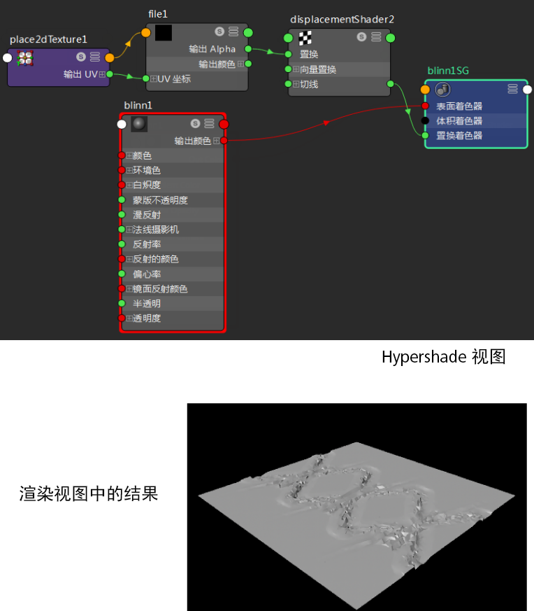

有关置换的详细信息，请参见置换贴图。
注：
- 请不要使用“环境”(Environment)纹理作为置换贴图。环境贴图的基本特征排除了用于置换贴图时的精确计算。
- 在凹凸或置换贴图过程中，如果图像文件包含遮罩通道，则遮罩通道用于置换和凹凸贴图。如果缺少遮罩通道，那么 RGB 的亮度会用于置换贴图和/或凹凸贴图。
如果希望使用亮度信息作为 Alpha，请启用“Alpha 为亮度”(Alpha Is Luminance)属性（在文件纹理的“属性编辑器”(Attribute Editor)的“颜色平衡”(Color Balance)区域中）。
创建置换贴图
- 在“Hypershade”窗口中，将所需材质（例如，Blinn）拖放到工作区来创建它，然后按住鼠标中键将材质样例拖动到视口中的对象上来指定它。
- 选择着色组节点。在着色组“属性编辑器”(Attribute Editor)中，单击“置换材质”(Displacement mat)属性旁边的贴图按钮并为其指定一个新的文件节点。
- 在文件选项卡中，指定所需的图像文件。
- 单击“渲染当前帧”按钮可显示渲染结果。
提示： 默认情况下，置换贴图结果不会显示在视口中。若要预览结果，请参见
预览置换结果。
您也可以使用“修改 > 转化 > 置换到多边形”(Modify > Convert > Displacement to Polygons)将置换烘焙到实际多边形几何体。
